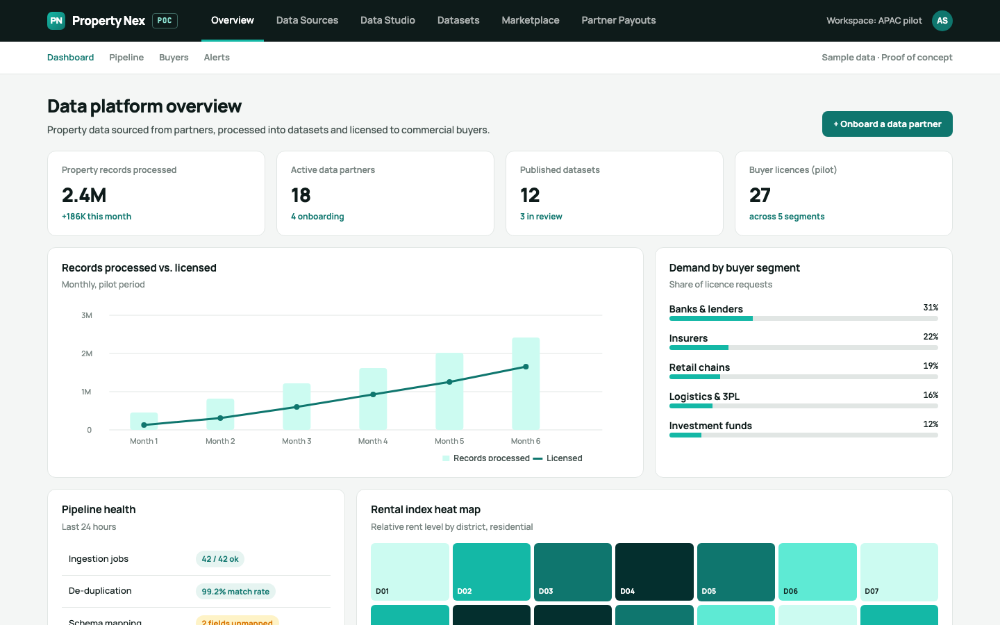
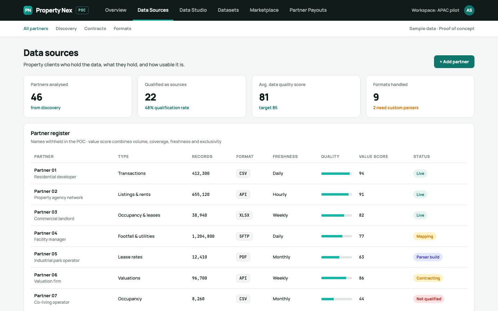
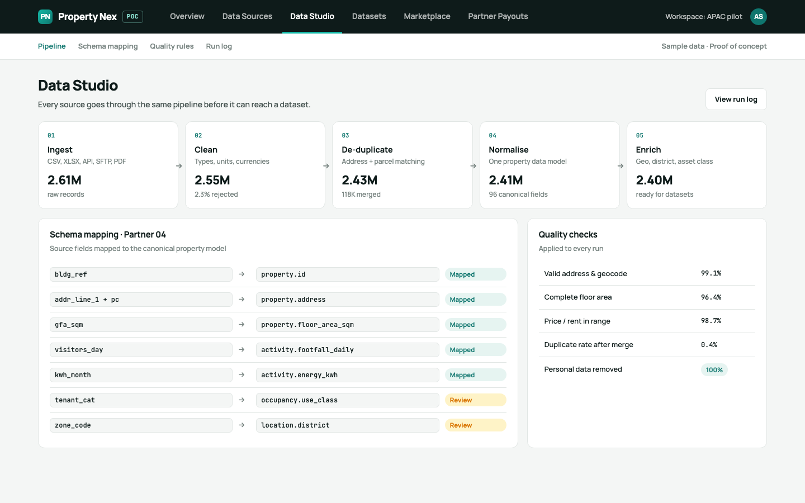
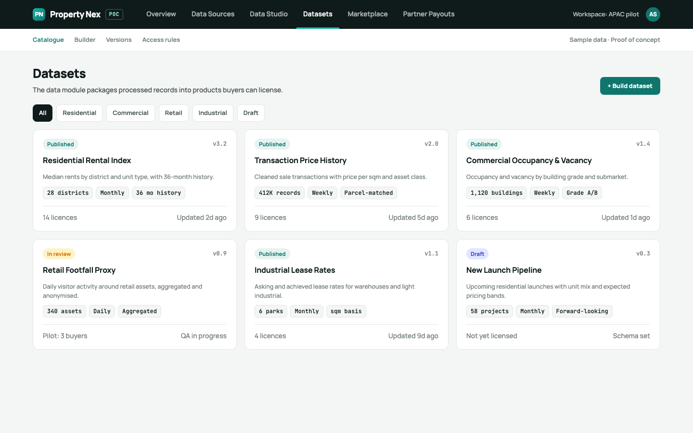
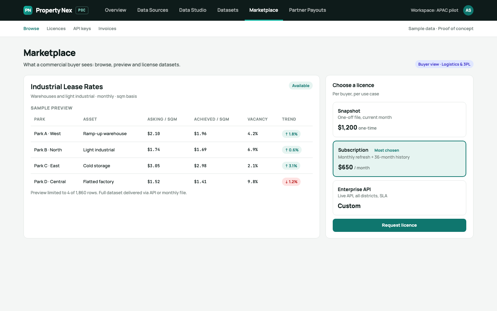
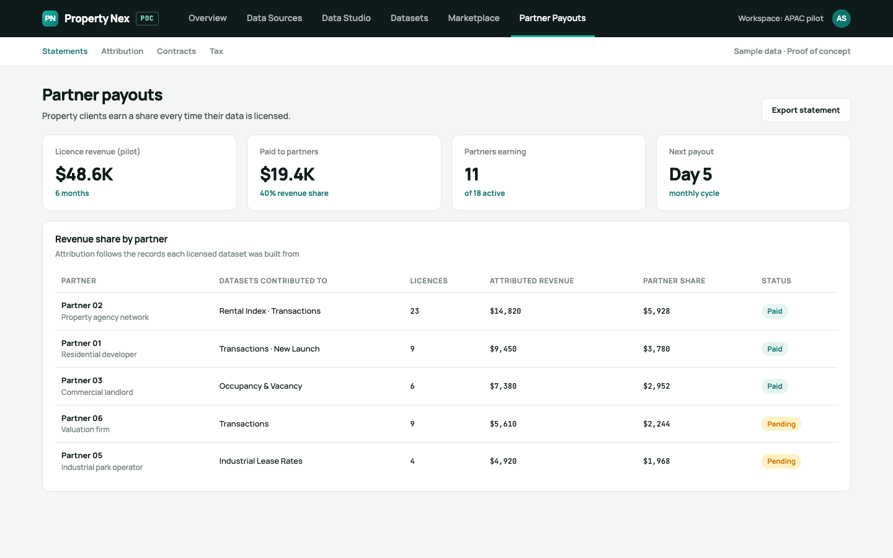

Real-estate data platform · proof of concept
Property Nex
A proof of concept for a platform that turns scattered property data into data products that commercial companies can license.
Real-estate data sits with many different property owners, developers, brokers, agencies and facility managers, each holding it in its own format. It is hard to analyse and cannot be sold as a product, even though banks, insurers, retailers, logistics firms and investors need exactly this data to decide where to lend, insure, open and invest. Property Nex closes that gap: find the property clients who hold the data, bring it into one consistent model, and license it through a marketplace, with the property clients earning a share of every licence.
- Property clients
- Collect & clean
- Data module
- Data platform
- Commercial buyers
The flow the proof of concept implements end to end.
- Data sources: property clients analysed and scored on volume, coverage, freshness and exclusivity, so only qualified partners become sources.
- Data Studio: every source runs through one pipeline (ingest, clean, de-duplicate, normalise, enrich) into a canonical property data model, with personal data removed.
- Dataset module: processed records packaged into licensable products such as a rental index, transaction history, commercial occupancy and industrial lease rates.
- Marketplace: buyers preview a dataset and choose a snapshot, subscription or enterprise API licence.
- Partner payouts: revenue attributed back to the partners whose records built each licensed dataset, paid as a revenue share.
Proof-of-concept screens. All figures, partners and prices are illustrative sample data.
-

01Platform overview: records processed and licensed, active partners, published datasets, and demand by buyer segment. -

02Data sources: each property client is analysed and scored before it becomes a source. -

03Data Studio: one pipeline from raw files to a canonical model, with schema mapping and quality checks on every run. -

04The dataset module packages processed records into products buyers can license. -

05The buyer’s view: preview a dataset and pick a licence (snapshot, subscription or enterprise API). -

06Partner payouts: licence revenue attributed back to the property clients whose data built each dataset.
{kind=link}
{kind=link}
{kind=link}
{kind=link}
{kind=link}
{kind=link}